🔒 Bu adres yalnızca sana özel , öğrencilerle paylaşma. Ödev verirken istediğin satırdaki 🔗 Linki Kopyala düğmesine bas ve çıkan adresi sınıfa gönder.Hikâye kitabı linki yalnızca o hikâyeyi açar.Aracın tamamı linki o konunun bütün etkinliklerini açar.↳ Etkinlik linki yalnızca o tek etkinliği açar; diğer sekmeler görünmez.
Tümünü aç Tümünü kapat
📐 1. Ünite Geometrik Şekiller 5 konu
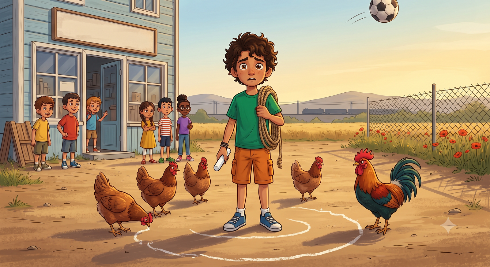
KONU 1 · TEMEL GEOMETRİK ŞEKİLLER
Mahalle Turnuvası ve Kayıp Çizgiler
📖 Hikâye kitabı Aç ↗ 🔗 Linki Kopyala 🎮 Aracın tamamı Aç ↗ 🔗 Linki Kopyala ↳ ✏️ Çizim Atölyesi Aç ↗ 🔗 Linki Kopyala ↳ ⭕ Pergel & Çember Aç ↗ 🔗 Linki Kopyala ↳ 🎯 Sembol Avı Aç ↗ 🔗 Linki Kopyala ↳ 🏆 Mini Sınav Aç ↗ 🔗 Linki Kopyala
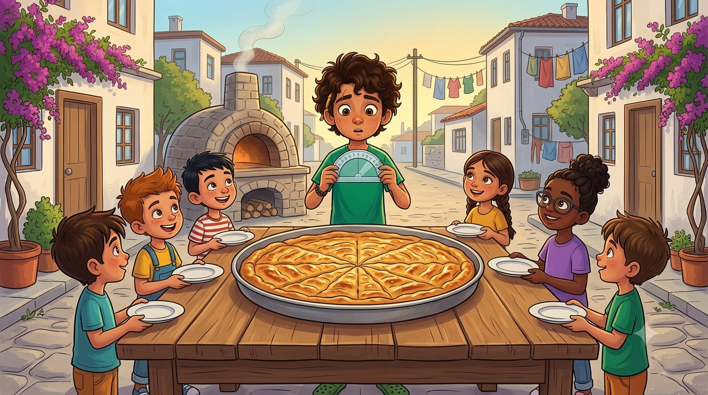
KONU 2 · AÇILAR VE AÇI ÖLÇME
Eşit Dilim Davası
📖 Hikâye kitabı Aç ↗ 🔗 Linki Kopyala 🎮 Aracın tamamı Aç ↗ 🔗 Linki Kopyala ↳ 📐 Açıölçer Atölyesi Aç ↗ 🔗 Linki Kopyala ↳ 👁️ Açı Tahmin Oyunu Aç ↗ 🔗 Linki Kopyala ↳ 🎯 Açı Türü Avı Aç ↗ 🔗 Linki Kopyala ↳ 🏆 Mini Sınav Aç ↗ 🔗 Linki Kopyala
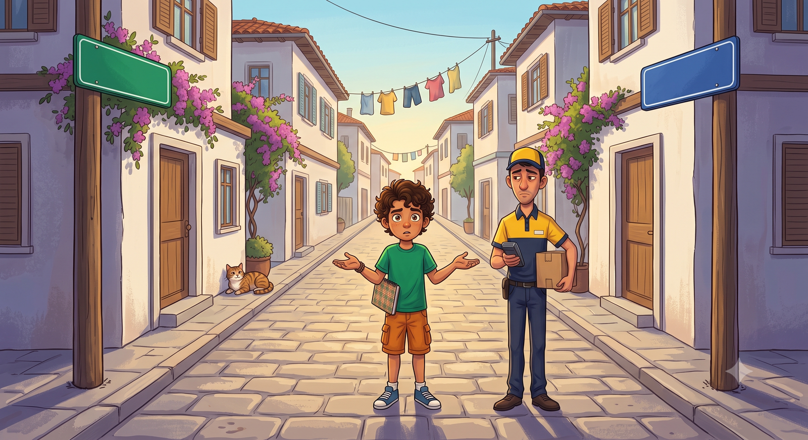
KONU 3 · DOĞRULARIN DURUMLARI
Sokağın İki Adı
📖 Hikâye kitabı Aç ↗ 🔗 Linki Kopyala 🎮 Aracın tamamı Aç ↗ 🔗 Linki Kopyala ↳ 🛤️ Doğru Simülatörü Aç ↗ 🔗 Linki Kopyala ↳ ✂️ Kesişim Laboratuvarı Aç ↗ 🔗 Linki Kopyala ↳ 🎯 Durum Avı Aç ↗ 🔗 Linki Kopyala ↳ 🏆 Mini Sınav Aç ↗ 🔗 Linki Kopyala
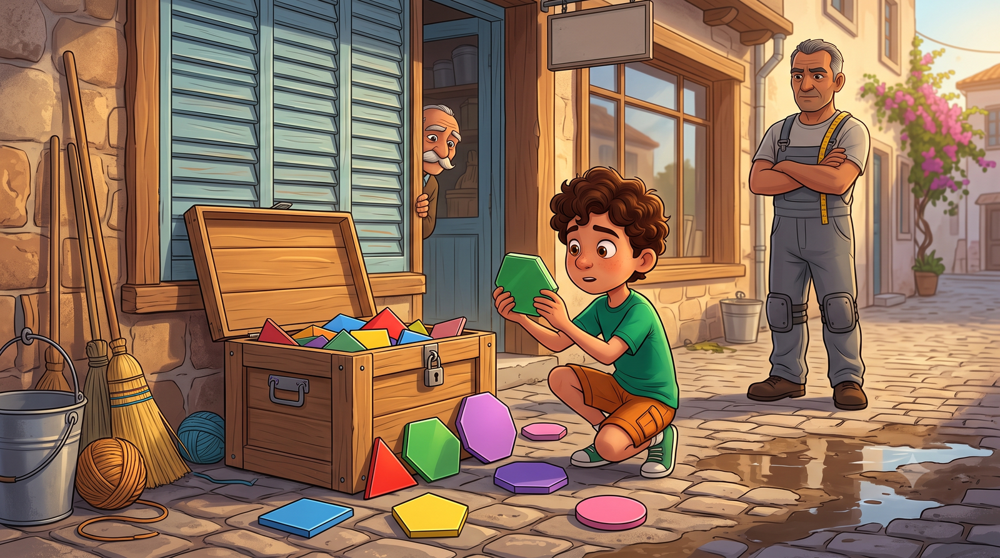
KONU 4 · ÇOKGENLER
Altıgen Peşinde
📖 Hikâye kitabı Aç ↗ 🔗 Linki Kopyala 🎮 Aracın tamamı Aç ↗ 🔗 Linki Kopyala ↳ 🏗️ Çokgen Kur Aç ↗ 🔗 Linki Kopyala ↳ ⭐ Düzgün Çokgen Makinesi Aç ↗ 🔗 Linki Kopyala ↳ 🎯 Çokgen Avı Aç ↗ 🔗 Linki Kopyala ↳ 🏆 Mini Sınav Aç ↗ 🔗 Linki Kopyala
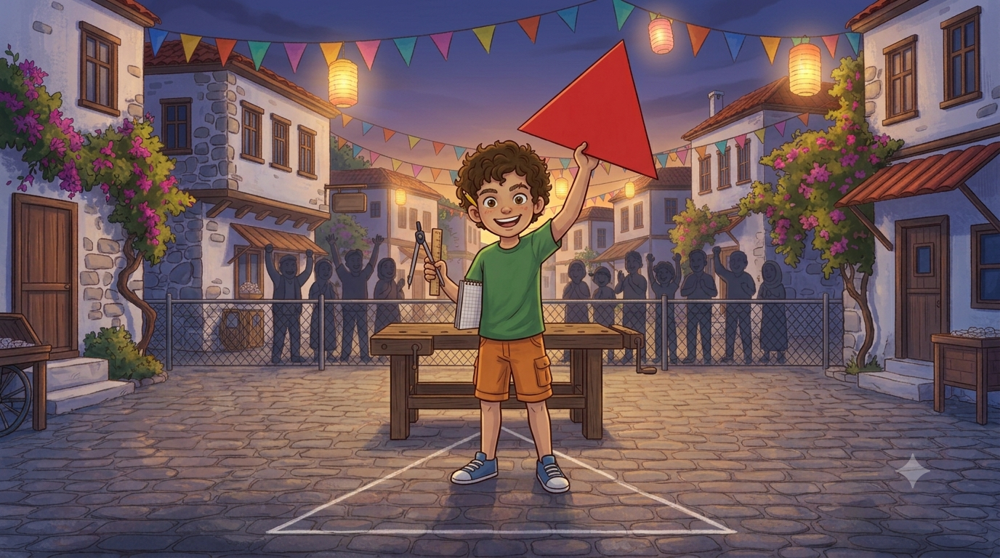
KONU 5 · ÜÇGEN VE ÜÇGEN İNŞASI
Üç Köşeli Zafer
📖 Hikâye kitabı Aç ↗ 🔗 Linki Kopyala 🎮 Aracın tamamı Aç ↗ 🔗 Linki Kopyala ↳ 🔬 Üçgen Laboratuvarı Aç ↗ 🔗 Linki Kopyala ↳ ⚙️ Pergelle İnşa Aç ↗ 🔗 Linki Kopyala ↳ ⭕ Çemberden Üçgen Aç ↗ 🔗 Linki Kopyala ↳ 🌸 Yaşam Çiçeği Aç ↗ 🔗 Linki Kopyala ↳ 🎯 Üçgen Avı Aç ↗ 🔗 Linki Kopyala ↳ 🏆 Mini Sınav Aç ↗ 🔗 Linki Kopyala
🔢 2. Ünite Sayılar ve Nicelikler: Doğal Sayılar 2 konu
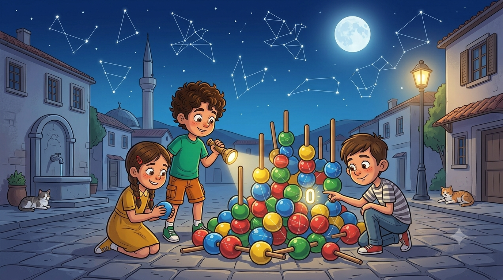
KONU 1 · ÇOK BASAMAKLI DOĞAL SAYILAR
Gökyüzü Gecesi ve Kayıp Sıfırlar
📖 Hikâye kitabı Aç ↗ 🔗 Linki Kopyala 🎮 Aracın tamamı Aç ↗ 🔗 Linki Kopyala ↳ 🔍 Basamak Tablosu Aç ↗ 🔗 Linki Kopyala ↳ 🧱 Bölüklerden Sayı Kur Aç ↗ 🔗 Linki Kopyala ↳ 🎯 Okunuş Avı Aç ↗ 🔗 Linki Kopyala ↳ 🏆 Mini Sınav Aç ↗ 🔗 Linki Kopyala
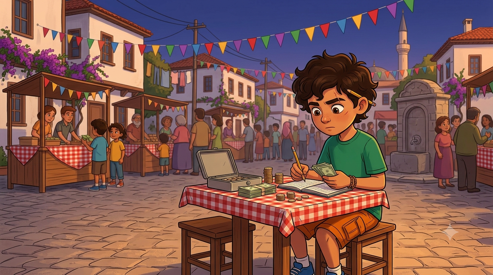
KONU 2 · GERÇEK YAŞAM PROBLEMLERİ
Kermes Hesabı
📖 Hikâye kitabı Aç ↗ 🔗 Linki Kopyala 🎮 Aracın tamamı Aç ↗ 🔗 Linki Kopyala ↳ ⚡ Zihinden İşlem Aç ↗ 🔗 Linki Kopyala ↳ 🎯 Tahmin Ustası Aç ↗ 🔗 Linki Kopyala ↳ 🪜 Adım Adım Çöz Aç ↗ 🔗 Linki Kopyala ↳ 🏆 Mini Sınav Aç ↗ 🔗 Linki Kopyala
📏 3. Ünite Geometrik Nicelikler 1 konu
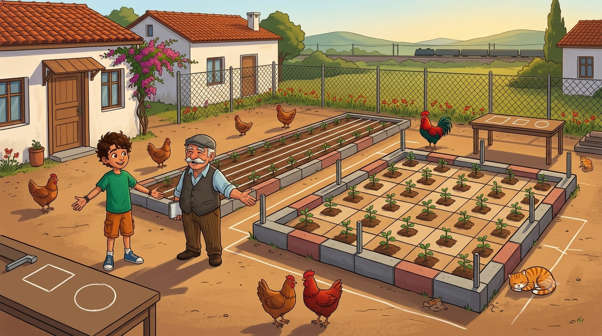
KONU 1 · DİKDÖRTGENDE ÇEVRE VE ALAN
Yirmi Dört Metre Çit
📖 Hikâye kitabı Aç ↗ 🔗 Linki Kopyala 🎮 Aracın tamamı Aç ↗ 🔗 Linki Kopyala ↳ 📐 Dikdörtgen Makinesi Aç ↗ 🔗 Linki Kopyala ↳ 🧩 Aynı Çevre, Farklı Alan Aç ↗ 🔗 Linki Kopyala ↳ 🎯 Hesap Avı Aç ↗ 🔗 Linki Kopyala ↳ 🏆 Mini Sınav Aç ↗ 🔗 Linki Kopyala
🍰 4. Ünite Sayılar ve Nicelikler: Kesirler 2 konu
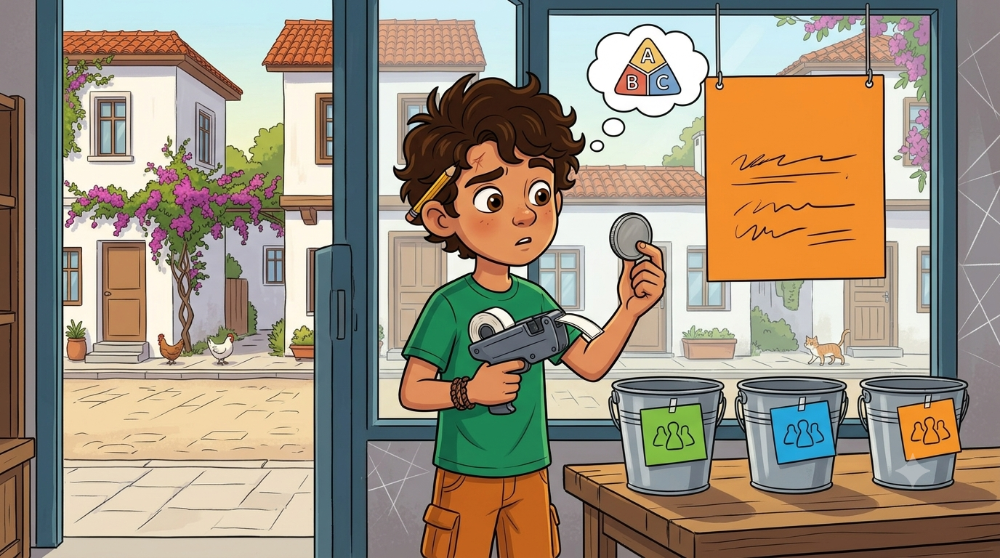
KONU 1 · KESİRLERİ FARKLI BİÇİMLERDE TEMSİL ETME
Sayıların Üç Dili
📖 Hikâye kitabı Aç ↗ 🔗 Linki Kopyala 🎮 Aracın tamamı Aç ↗ 🔗 Linki Kopyala ↳ 🍕 Kesir Modelleyici Aç ↗ 🔗 Linki Kopyala ↳ 🔁 Üç Kılık Makinesi Aç ↗ 🔗 Linki Kopyala ↳ 🎯 Denk Avı Aç ↗ 🔗 Linki Kopyala ↳ 🏆 Mini Sınav Aç ↗ 🔗 Linki Kopyala
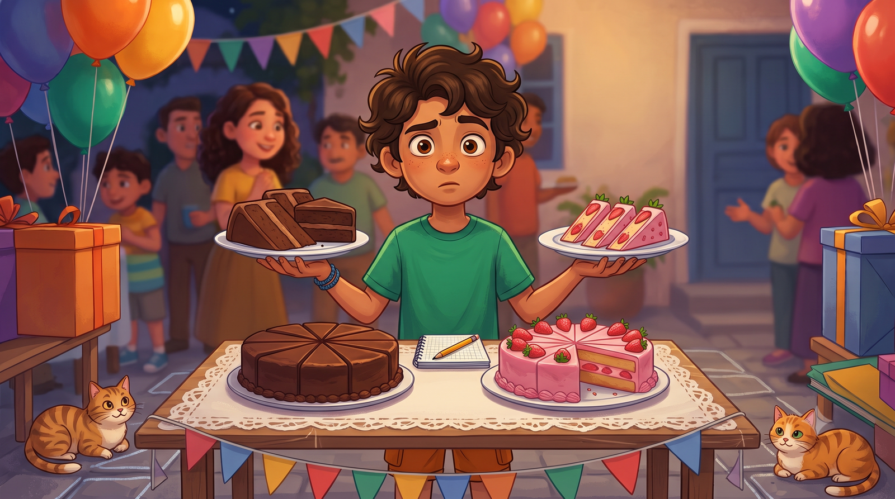
KONU 2 · KESİRLERİ KARŞILAŞTIRMA
Adalet Terazisi
📖 Hikâye kitabı Aç ↗ 🔗 Linki Kopyala 🎮 Aracın tamamı Aç ↗ 🔗 Linki Kopyala ↳ ⚖️ Terazi Aç ↗ 🔗 Linki Kopyala ↳ 🛒 Ucuzu Bul Aç ↗ 🔗 Linki Kopyala ↳ 🎯 Büyüklük Avı Aç ↗ 🔗 Linki Kopyala ↳ 🏆 Mini Sınav Aç ↗ 🔗 Linki Kopyala
📊 5. Ünite İstatistiksel Araştırma Süreci 2 konu
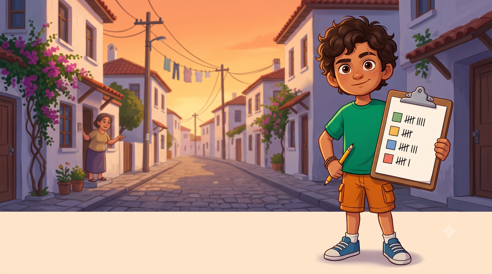
KONU 1 · İSTATİSTİK VE ANKET
Mahalle Anketi
📖 Hikâye kitabı Aç ↗ 🔗 Linki Kopyala 🎮 Aracın tamamı Aç ↗ 🔗 Linki Kopyala ↳ 🪜 Süreç Sıralayıcı Aç ↗ 🔗 Linki Kopyala ↳ 🕵️ Soru Dedektifi Aç ↗ 🔗 Linki Kopyala ↳ 📋 Anket Atölyesi Aç ↗ 🔗 Linki Kopyala ↳ 🏆 Mini Sınav Aç ↗ 🔗 Linki Kopyala
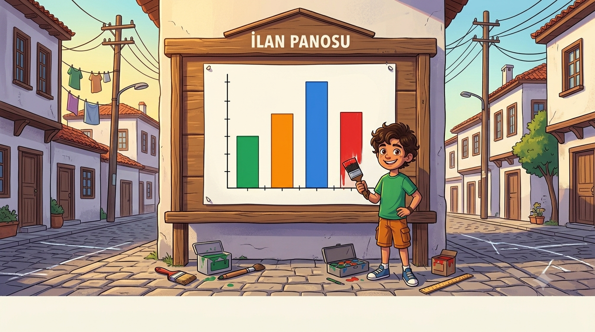
KONU 2 · VERİ GÖRSELLEŞTİRME
Yalancı Grafik
📖 Hikâye kitabı Aç ↗ 🔗 Linki Kopyala 🎮 Aracın tamamı Aç ↗ 🔗 Linki Kopyala ↳ 📊 Sütun Grafiği Aç ↗ 🔗 Linki Kopyala ↳ 🥧 Daire Grafiği Aç ↗ 🔗 Linki Kopyala ↳ 🕵️ Yanıltıcı Grafik Avı Aç ↗ 🔗 Linki Kopyala ↳ 🏆 Mini Sınav Aç ↗ 🔗 Linki Kopyala
⚖️ 6. Ünite İşlemlerle Cebirsel Düşünme 2 konu
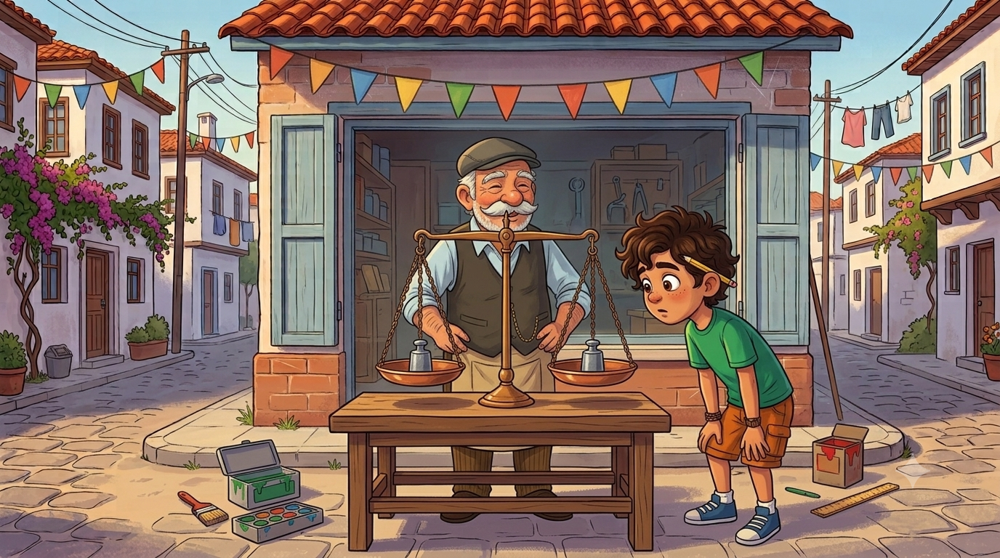
KONU 1 · EŞİTLİK VE İŞLEM ÖNCELİĞİ
Dede'nin Terazisi
📖 Hikâye kitabı Aç ↗ 🔗 Linki Kopyala 🎮 Aracın tamamı Aç ↗ 🔗 Linki Kopyala ↳ ⚖️ Denge Terazisi Aç ↗ 🔗 Linki Kopyala ↳ 🔍 Özellik Dedektifi Aç ↗ 🔗 Linki Kopyala ↳ 🔢 Kare & Küp Aç ↗ 🔗 Linki Kopyala ↳ 🚦 İşlem Önceliği Aç ↗ 🔗 Linki Kopyala ↳ 🏆 Mini Sınav Aç ↗ 🔗 Linki Kopyala
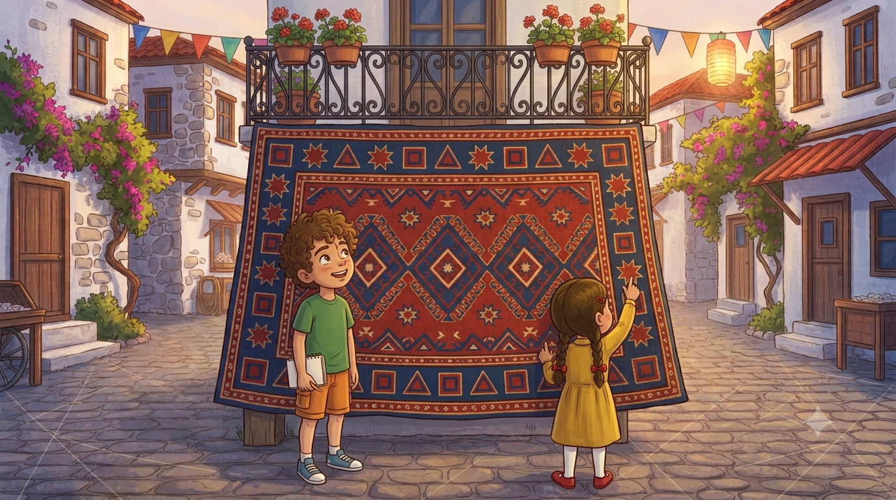
KONU 2 · SAYI VE ŞEKİL ÖRÜNTÜLERİ
Halının Şifresi
📖 Hikâye kitabı Aç ↗ 🔗 Linki Kopyala 🎮 Aracın tamamı Aç ↗ 🔗 Linki Kopyala ↳ 🔢 Örüntü Makinesi Aç ↗ 🔗 Linki Kopyala ↳ 🔺 Şekil Örüntüleri Aç ↗ 🔗 Linki Kopyala ↳ 🕵️ Kural Dedektifi Aç ↗ 🔗 Linki Kopyala ↳ ❓ Kayıp Terim Aç ↗ 🔗 Linki Kopyala ↳ 🏆 Mini Sınav Aç ↗ 🔗 Linki Kopyala
🎲 7. Ünite Veriden Olasılığa 1 konu
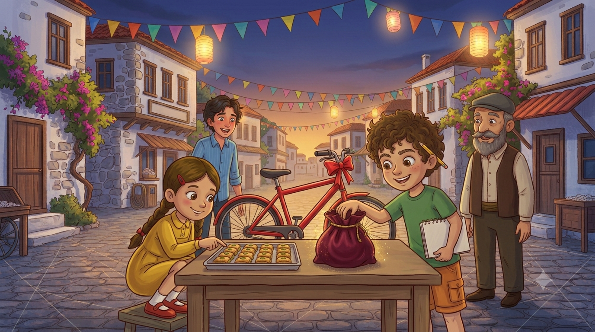
KONU 1 · OLAYLARIN OLASILIĞI
Şans Torbası
📖 Hikâye kitabı Aç ↗ 🔗 Linki Kopyala 🎮 Aracın tamamı Aç ↗ 🔗 Linki Kopyala ↳ 🌈 Olasılık Spektrumu Aç ↗ 🔗 Linki Kopyala ↳ 🎒 Torba Deneyi Aç ↗ 🔗 Linki Kopyala ↳ ⚖️ Adil Oyun Aç ↗ 🔗 Linki Kopyala ↳ 🕵️ Olay Avı Aç ↗ 🔗 Linki Kopyala ↳ 🏆 Mini Sınav Aç ↗ 🔗 Linki Kopyala